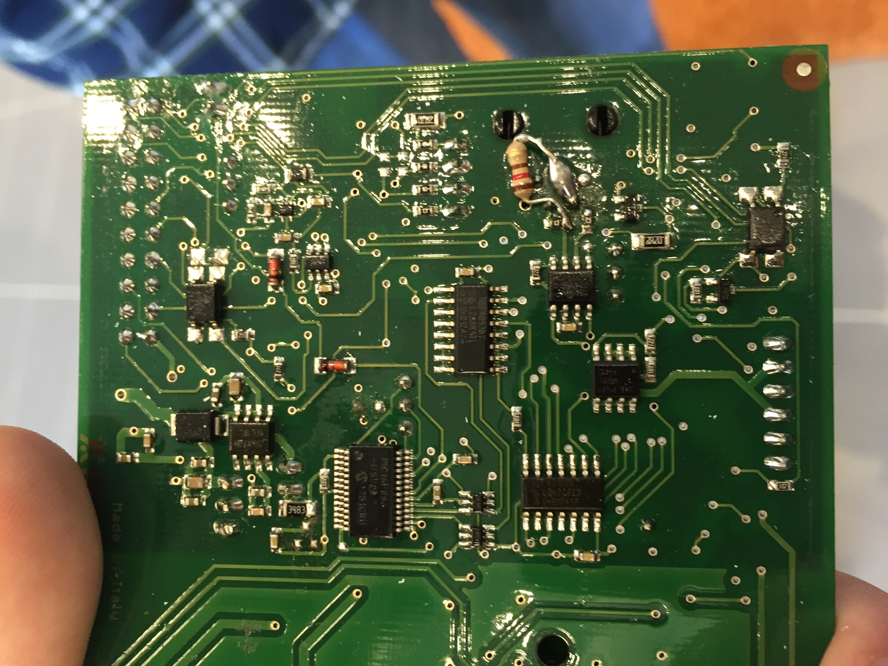
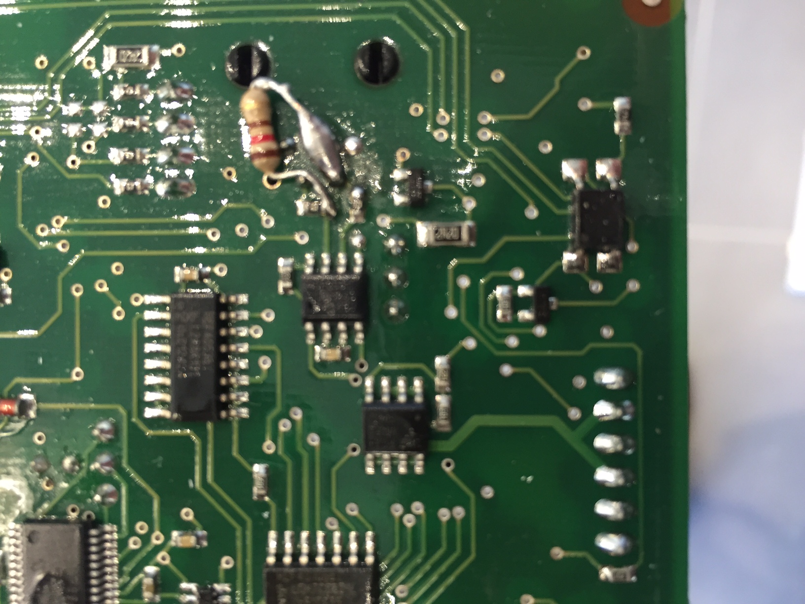

We identified 2 interfaces on the BMS
The BMS originaly mounted on the OSV sent data as sequence of ascii chars.
Each line represents a piece of information.
Each line is 5 digits long (ABCDE).
The 2 first numbers of the line identified the information sent
You can access a sample of a capture done on the osv during the osvcamp.
The serial communication with the BMS uses a standard set of parameters:
To start getting the information from the BMS, an initialization sequence is required. It is "01" (ASCII: 0x30 0x31). Then, the BMS start sending its information continuously.
Example output from the BMS
01671 02671 03673 04671 05668 06670 07668 08672 09671 10671 11672 12668
| AB - 2 first digits | Description | Sample |
|---|---|---|
| 01 .. 24 | Voltage of the 24 cells of the battry. To obtain the voltage (in Volts) you have to divide the last 3 chars of the line by 200. |
01671: 01 671 -> cell 1: 671 / 200 = 3.355 V 02671: 02 671 -> cell 1: 671 / 200 = 3.355 V 03673: 03 673 -> cell 1: 673 / 200 = 3.365 V 04671: 04 671 -> cell 1: 671 / 200 = 3.355 V 05668: 05 668 -> cell 1: 668 / 200 = 3.34 V 06670: 06 670 -> cell 1: 671 / 200 = 3.35 V 07668: 07 668 -> cell 1: 671 / 200 = 3.34 V 08672: 08 672 -> cell 1: 671 / 200 = 3.36 V 09671: 09 671 -> cell 1: 671 / 200 = 3.355 V 10671: 10 671 -> cell 1: 671 / 200 = 3.355 V 11672: 11 672 -> cell 1: 671 / 200 = 3.36 V 12668: 12 668 -> cell 1: 671 / 200 = 3.34 V |
| 74 |
Temperature of the 4 sensors (3 for the batteries pack, 1 for the BMS)
The next (3rd) digit indicates the id of the sensor :
The 2 last digits (4 and 5) indicates the temperature of the sensor in celsius degre.
|
74015: 74 0 15 -> Temp. Sensor 0: 15 ° C 74115: 74 1 15 -> Temp. Sensor 1: 15 ° C 74299: 74 2 99 -> Temp. Sensor 2: Not connected 74399: 74 3 99 -> Temp. Sensor 3: Not connected |
| 84 |
Current going out of the battery. The actual value in amperes is:
A * value + B AmperesWhere A is a factor not identified today (probably between 1 and 1/3), and B = -400. So, when neither the battery is being charged, nor the vehicle being used, value is 400. |
84399: 84 399 -> 399 means no current is going in or out of the battery. |
| 94 |
State of Charge for cells If the next digit (3rd) is
94086: 94 0 86 -> SOC for battery: 86% This information is sent to the charger through cable 1.
TODO: the last digit represent boolean information, but we didn't get the details. |
94305: 94 3 05 -> PWM : 5%, meaning no charge necessary |
| 99 |
PWM sent to engine controller through cable 3
The third digit is always 0.
The 2 last digits (4 and 5) indicates the PWM in pourcentage sent to the Engin Controller.
|
99095: 99 0 95 -> 95%: max possible current can be drawn by engine controller |
After disassembling the BMS, we identified the CAN Transceiver: it is a MCP 2551.
Let's share a picture of the correct configuration


So the speed of the bus is 250 kbit/sec (High Speed Can).
The Can Identifier is 0x186.
Some captures on the CAN bus were done during the OSV Camp and are available here and here and here.
Example
0:0:8:7283 Rx 1 186 s 8 70 DE 00 00 3B 00 00 02 0:0:9:2515 Rx 1 186 s 8 80 DE 00 00 3B 00 00 05 0:0:9:7747 Rx 1 186 s 8 80 DE 00 00 3B 00 00 05
We managed to understand some parts of the message. Let's take the 70 DE 00 00 3B 00 00 02 message as example.
|
Byte 5
70 DE 00 00 3B 00 00 02 |
The State of Charge. (Max : 64) |
|
Last byte
70 DE 00 00 3B 00 00 02 |
State of the power supply cable
|